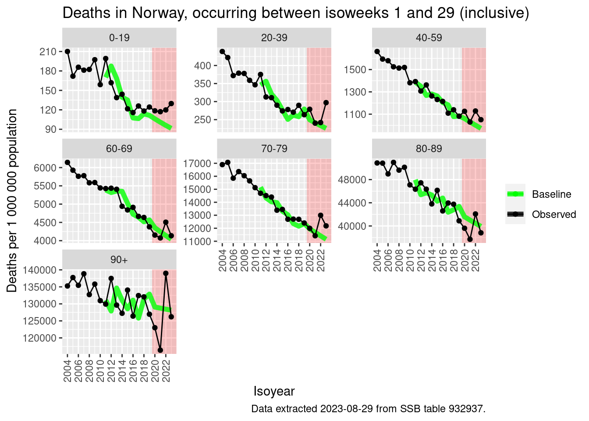

![]()
library(data.table)
library(magrittr)
library(ggplot2)
if (interactive()) {
folder_location <- "post/2023-08-26-all-cause-mortality-in-norway/"
} else {
folder_location <- ""
}# Downloading data
d_deaths <- fread("https://data.ssb.no/api/v0/dataset/932937.csv?lang=en")
setnames(d_deaths, c("sex", "age", "week", "content", "deaths_n"))
d_deaths[, isoweek := stringr::str_extract(week, "[0-9][0-9]$")]
d_deaths[, isoyear := stringr::str_extract(week, "^[0-9][0-9][0-9][0-9]")]
d_deaths[, isoyearweek := paste0(isoyear, "-", isoweek)]
d_deaths[, isoweek := as.numeric(isoweek)]
d_deaths[, isoyear := as.numeric(isoyear)]
d_deaths[, week := NULL]
d_deaths <- d_deaths[isoyear >= 2004]
d_deaths <- d_deaths[sex=="0 Both sexes"]
d_deaths[, sex := NULL]
d_deaths[, content := NULL]
setcolorder(d_deaths, c("age", "isoyear", "isoweek", "isoyearweek", "deaths_n"))
setorder(d_deaths, age, isoyearweek)
# Removing the latest 3 weeks of data (due to registration delay)
max_isoweek <- d_deaths[isoyear == 2023 & !is.na(deaths_n)]$isoweek %>%
max() - 3
d_deaths <- d_deaths[isoweek <= max_isoweek]
# recategorizing age
unique(d_deaths$age)
d_deaths[, age := fcase(
age == "F00-04 0-4 years", "0-19",
age == "F05-09 5-9 years", "0-19",
age == "F10-14 10-14 years", "0-19",
age == "F15-19 15-19 years", "0-19",
age == "F20-24 20-24 years", "20-39",
age == "F25-29 25-29 years", "20-39",
age == "F30-34 30-34 years", "20-39",
age == "F35-39 35-39 years", "20-39",
age == "F40-44 40-44 years", "40-59",
age == "F45-49 45-49 years", "40-59",
age == "F50-54 50-54 years", "40-59",
age == "F55-59 55-59 years", "40-59",
age == "F60-64 60-64 years", "60-69",
age == "F65-69 65-69 years", "60-69",
age == "F70-74 70-74 years", "70-79",
age == "F75-79 75-79 years", "70-79",
age == "F80-84 80-84 years", "80-89",
age == "F85-89 85-89 years", "80-89",
age == "F90-94 90-94 years", "90+",
age == "F95-99 95-99 years", "90+",
age == "F100G5+ 100 years or older", "90+"
)]
d_deaths <- d_deaths[,.(
deaths_n = sum(deaths_n)
), keyby=.(
age, isoyear, isoweek, isoyearweek
)]# Aggregating
pd <- d_deaths[, .(deaths_n = sum(deaths_n)), keyby = .(isoyear, age)]
pd[
csdata::nor_population_by_age_cats(list("0-19"=0:19, "20-39"=20:39, "40-59"=40:59, "60-69"=60:69, "70-79"=70:79, "80-89"=80:89, "90+"=90:110))[granularity_geo=="nation"],
on = c("isoyear==calyear", "age"),
pop_jan1_n := pop_jan1_n
]
pd[, deaths_pr1000000 := 1000000*deaths_n/pop_jan1_n]
# Estimating the baseline
for(x_age in unique(pd$age))for(isoyear_pred in 2011:2023){
# Determining the training data
if(isoyear_pred <= 2019){
isoyear_train <- (isoyear_pred-5):(isoyear_pred-1)
} else {
isoyear_train <- 2010:2019
}
# Fitting the model
fit <- glm(
deaths_n ~ isoyear + offset(log(pop_jan1_n)),
#deaths_n ~ isoyear,
data = pd[age %in% x_age & isoyear %in% isoyear_train],
family = "poisson"
)
# Predicting the baseline
pred <- predict(
fit,
pd[age %in% x_age & isoyear %in% isoyear_pred]
) %>%
exp()
pd[
age %in% x_age & isoyear %in% isoyear_pred,
deaths_baseline_n := pred
]
}
# Calculating the excess mortality
pd[, deaths_baseline_pr1000000 := 1000000*deaths_baseline_n/pop_jan1_n]
pd[, deaths_excess_n := deaths_n - deaths_baseline_n]
pd[, deaths_excess_pr100 := 100*deaths_excess_n/deaths_baseline_n]# Plotting
q <- ggplot(pd, aes(x = isoyear, y = deaths_pr1000000))
q <- q + annotate("rect", xmin=2019.5, xmax=Inf, ymin=-Inf,ymax=Inf, fill="red", alpha = 0.2)
q <- q + geom_line(mapping = aes(y=deaths_baseline_pr1000000, color = "Baseline"), lwd = 2, alpha = 0.8)
q <- q + geom_line(mapping=aes(color="Observed"))
q <- q + geom_point(mapping=aes(color="Observed"))
q <- q + scale_x_continuous(
"Isoyear",
breaks = seq(2000, 2023, 2)
)
q <- q + scale_color_manual(NULL, values=c("green", "black"))
q <- q + scale_y_continuous("Deaths per 1 000 000 population")
q <- q + facet_wrap(~age, scales = "free_y")
q <- q + labs(
title = glue::glue(
"Deaths in Norway, occurring between isoweeks 1 and {max_isoweek} (inclusive)"
)
)
q <- q + labs(caption = "Data extracted 2023-08-29 from SSB table 932937.")
q <- q + csstyle::set_x_axis_vertical()
qWarning: Removed 7 rows containing missing values (`geom_line()`).
# Plotting
q <- ggplot(pd, aes(x = isoyear, y = deaths_excess_pr100))
q <- q + annotate("rect", xmin=2019.5, xmax=Inf, ymin=-Inf,ymax=Inf, fill="red", alpha = 0.2)
q <- q + geom_col()
q <- q + geom_hline(yintercept = 0, color = "black")
q <- q + scale_x_continuous(
"Isoyear",
breaks = seq(2011, 2023, 1)
)
q <- q + facet_wrap(~age)
q <- q + scale_y_continuous("Percentage excess (%)")
# q <- q + scale_y_continuous(
# "Number of excess deaths",
# labels = csstyle::format_num_as_nor_num_0,
# breaks = seq(-1000, 4000, 500)
# )
q <- q + labs(
title = glue::glue(
"Excess deaths in Norway, occurring between isoweeks 1 and {max_isoweek} (inclusive)"
)
)
q <- q + labs(
caption = "Baseline calculated from a poisson regression of the previous 10 years of data.\nBaselines for 2020, 2021, and 2022 calculated using data for 2010-2019.\nData extracted 2023-08-29 from SSB table 932937."
)
q <- q + csstyle::set_x_axis_vertical()
qWarning: Removed 49 rows containing missing values (`position_stack()`).